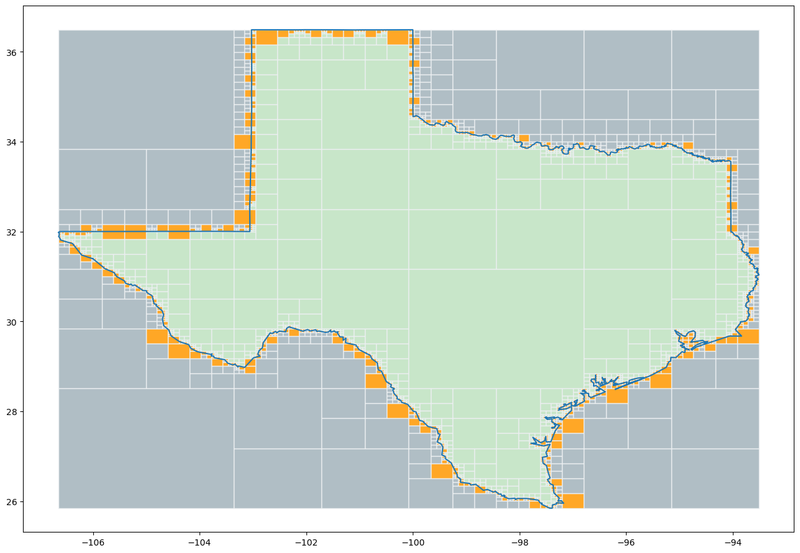
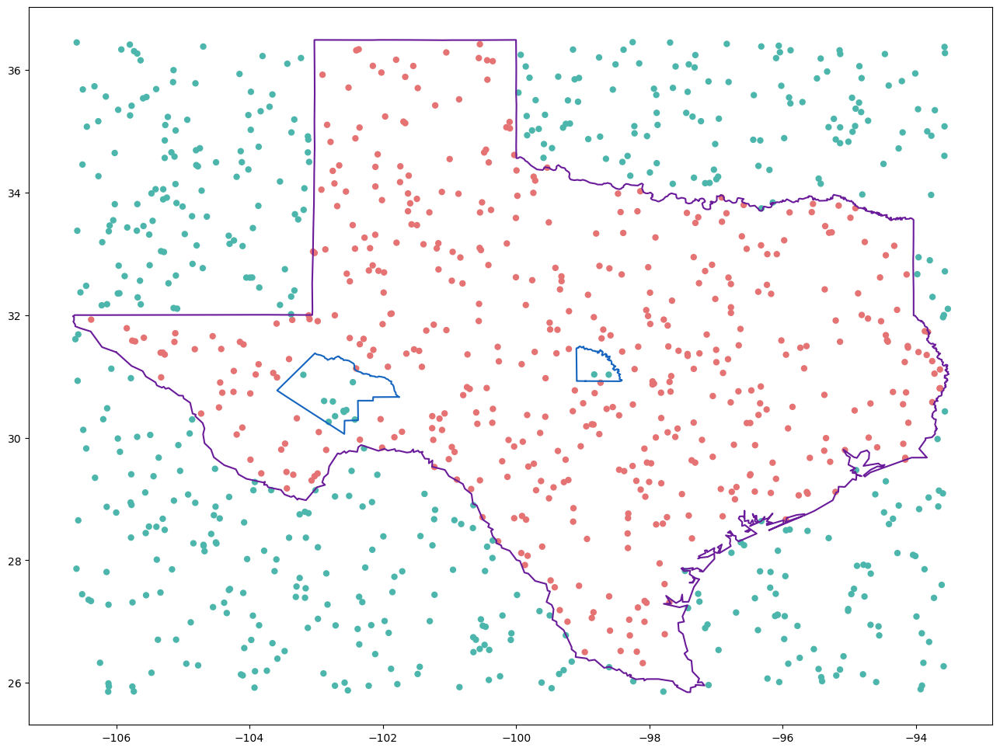
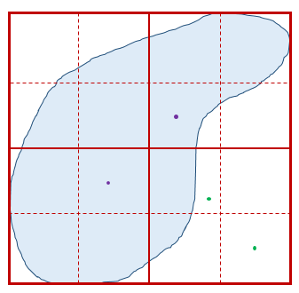
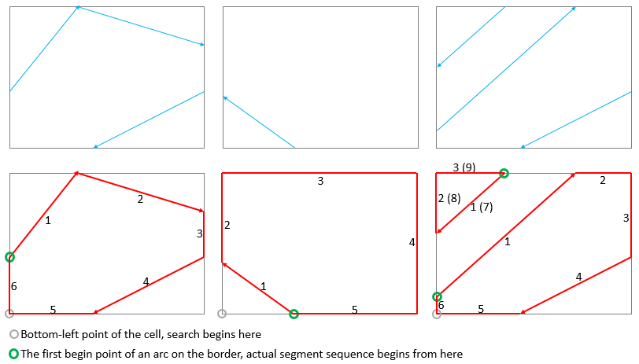

Fast Point in Polygon Testing Method¶
Author: Hu Shao shaohutiger@gmail.com
Content¶
Introduction¶
Testing whether a point locates inside a polygon is a time consuming work. Especially when the point number is huge and the boundary of study area is complex.
Here we implement a “Fast Point in Polygon Testing Method” to help users determine whether a point is inside a specific polygon rapidly.
The Quadtree structure is employed to divide a polygon into plenty of lattices. During the dividing, each lattices is marked as in, out or maybe, which means “totally lies inside the polygon”, “totally lies out side the polygon” and “intersect with the boundary if the polygon”.
For each point, we firstly allocate it into a lattice. If the lattice is marked as “in” or “out”, we will immediately know the result; if the lattice is marked as “maybe”, we then need to do some further calculation, which won’t be complex.
Once the quadtree structure is constructed, the “point in polygon testing” will be very fast.
This method is suitable for the situations where point numbers are huge, polygon numbers are small and polygon boundary is complex. E.g., simulation in point pattern analysis.
# Import essential libraries for following calculation
import numpy as np
from libpysal.cg.polygonQuadTreeStructure import QuadTreeStructureSingleRing
from libpysal.cg.shapes import Polygon, Ring
%matplotlib inline
# import codecs
# import shapely
# from pysal.cg.shapes import Polygon, Point
# from shapely.geometry import Polygon as spPolygon
# from shapely.geometry import Point as spPoint
# import time
import random
import time
import matplotlib
import matplotlib.pyplot as plt
print("import finished!")
import finished!
How to Use¶
Data preparing¶
def get_ring_from_file(path):
vertices = []
with open(path) as file:
for line in file:
if len(line) < 2:
continue
coordinates = line.split(",")
x = float(coordinates[0])
y = float(coordinates[1])
vertices.append((x, y))
return vertices
# Prepare the polygons for future use.
Texas = Polygon(get_ring_from_file("data/texas_points.txt"))
Pecos = Polygon(get_ring_from_file("data/pecos_points.txt"))
San_Saba = Polygon(get_ring_from_file("data/san_saba_points.txt"))
Texas_with_holes = Polygon(Texas.vertices, [Pecos.vertices, San_Saba.vertices])
/tmp/ipykernel_4106/1580836759.py:15: FutureWarning: Objects based on the `Geometry` class will deprecated and removed in a future version of libpysal.
Texas = Polygon(get_ring_from_file("data/texas_points.txt"))
/home/runner/micromamba/envs/test/lib/python3.14/site-packages/libpysal/cg/shapes.py:1408: FutureWarning: Objects based on the `Geometry` class will deprecated and removed in a future version of libpysal.
self._part_rings = [Ring(vertices)]
/tmp/ipykernel_4106/1580836759.py:16: FutureWarning: Objects based on the `Geometry` class will deprecated and removed in a future version of libpysal.
Pecos = Polygon(get_ring_from_file("data/pecos_points.txt"))
/tmp/ipykernel_4106/1580836759.py:17: FutureWarning: Objects based on the `Geometry` class will deprecated and removed in a future version of libpysal.
San_Saba = Polygon(get_ring_from_file("data/san_saba_points.txt"))
/tmp/ipykernel_4106/1580836759.py:18: FutureWarning: Objects based on the `Geometry` class will deprecated and removed in a future version of libpysal.
Texas_with_holes = Polygon(Texas.vertices, [Pecos.vertices, San_Saba.vertices])
/home/runner/micromamba/envs/test/lib/python3.14/site-packages/libpysal/cg/shapes.py:1412: FutureWarning: Objects based on the `Geometry` class will deprecated and removed in a future version of libpysal.
self._hole_rings = list(map(Ring, holes))
# Build the quadtree structure
Texas.build_quad_tree_structure()
print("quad tree build finished")
# create some random point and test if these points locate in the polygon
for _ in range(0, 10):
x = random.uniform(Texas.bbox[0], Texas.bbox[2])
y = random.uniform(Texas.bbox[1], Texas.bbox[3])
print(x, y, Texas.contains_point([x, y]))
quad tree build finished
-104.12178280398113 26.335614429000206 False
-105.52411673343146 35.0551266245094 False
-103.17165258511932 33.0779411812285 False
-100.4124143390795 32.8150437987814 True
-101.03474404014861 32.46785617787295 True
-104.5895338993943 35.6557589857985 False
-100.1044035263572 27.66840714541888 False
-93.86152843735492 29.919749050861647 False
-100.45545461487654 34.7468550530176 True
-100.67024156520682 34.785802145980476 True
/home/runner/micromamba/envs/test/lib/python3.14/site-packages/libpysal/cg/shapes.py:1195: FutureWarning: Objects based on the `Geometry` class will deprecated and removed in a future version of libpysal.
self._bounding_box = Rectangle(min(x), min(y), max(x), max(y))
/home/runner/micromamba/envs/test/lib/python3.14/site-packages/libpysal/cg/polygonQuadTreeStructure.py:685: FutureWarning: Objects based on the `Geometry` class will deprecated and removed in a future version of libpysal.
construct_rings.append(Ring(arc))
/home/runner/micromamba/envs/test/lib/python3.14/site-packages/libpysal/cg/polygonQuadTreeStructure.py:140: FutureWarning: Objects based on the `Geometry` class will deprecated and removed in a future version of libpysal.
self._rings.append(Ring(point_list))
/home/runner/micromamba/envs/test/lib/python3.14/site-packages/libpysal/cg/shapes.py:1614: FutureWarning: Objects based on the `Geometry` class will deprecated and removed in a future version of libpysal.
self._bounding_box = Rectangle(
The process of building quadtree¶
Quadtree building process - visualize the building result¶
# The region of Texas, to make the steps more clear, here we only use the main region
texas_main_vertices = Texas.parts[0]
fig, ax = plt.subplots(figsize=(16, 11))
qts_singlering = QuadTreeStructureSingleRing(Ring(texas_main_vertices))
patches = []
color_array = []
cells_to_draw = [qts_singlering.root_cell]
while len(cells_to_draw) > 0:
cell = cells_to_draw.pop()
if cell.children_l_b is None:
# this is a leaf in the quad tree structure, draw it
verts = [
[cell.min_x, cell.min_y],
[cell.min_x, cell.min_y + cell.length_y],
[cell.min_x + cell.length_x, cell.min_y + cell.length_y],
[cell.min_x + cell.length_x, cell.min_y],
[cell.min_x, cell.min_y],
]
patches.append(verts)
if cell.status == "in":
color_array.append("#c8e6c9") # in color green
elif cell.status == "out":
color_array.append("#b0bec5") # in color grey
else: # means "maybe"
color_array.append("#ffa726") # in color orange
else:
cells_to_draw.append(cell.children_l_b)
cells_to_draw.append(cell.children_l_t)
cells_to_draw.append(cell.children_r_b)
cells_to_draw.append(cell.children_r_t)
coll = matplotlib.collections.PolyCollection(
np.array(patches), facecolors=color_array, edgecolors="#eceff1"
)
ax.add_collection(coll)
point_x_list = []
point_y_list = []
for point in texas_main_vertices:
point_x_list.append(point[0])
point_y_list.append(point[1])
plt.plot(point_x_list, point_y_list)
ax.autoscale_view()
plt.show()
/tmp/ipykernel_4106/3152310791.py:4: FutureWarning: Objects based on the `Geometry` class will deprecated and removed in a future version of libpysal.
qts_singlering = QuadTreeStructureSingleRing(Ring(texas_main_vertices))

Visualizing the result of “Point in Polygon” test¶
plt.figure(figsize=(16, 12))
for vertices in Texas_with_holes.parts:
line_x_list = []
line_y_list = []
for point in vertices:
line_x_list.append(point[0])
line_y_list.append(point[1])
plt.plot(line_x_list, line_y_list, c="#6a1b9a")
for vertices in Texas_with_holes.holes:
line_x_list = []
line_y_list = []
for point in vertices:
line_x_list.append(point[0])
line_y_list.append(point[1])
plt.plot(line_x_list, line_y_list, c="#1565c0")
point_x_list = []
point_y_list = []
point_colors = []
bbox = Texas_with_holes.bbox
for _ in range(0, 1000):
x = random.uniform(bbox[0], bbox[2])
y = random.uniform(bbox[1], bbox[3])
point_x_list.append(x)
point_y_list.append(y)
if Texas_with_holes.contains_point([x, y]):
point_colors.append("#e57373") # inside, red
else:
point_colors.append("#4db6ac") # outside, green
plt.scatter(point_x_list, point_y_list, c=point_colors, linewidth=0)
plt.show()

Test the performance of this quad-tree-structure¶
# construct a study area with 3000+ vertices
Huangshan = Polygon(get_ring_from_file("data/study_region_huangshan_point.txt"))
points = []
bbox = Huangshan.bounding_box
for _ in range(0, 10000):
x = random.uniform(bbox[0], bbox[2])
y = random.uniform(bbox[1], bbox[3])
points.append((x, y))
print(str(len(points)) + " random points generated")
print("------------------------------")
print("Begin test without quad-tree-structure")
time_begin = int(round(time.time() * 1000))
for point in points:
Huangshan.contains_point(point)
time_end = int(round(time.time() * 1000))
print(
"Test without quad-tree-structure finished, time used = "
+ str((time_end - time_begin) / 1000.0)
+ "s"
)
print("------------------------------")
print("Begin test with quad-tree-structure")
time_begin = int(round(time.time() * 1000))
Huangshan.build_quad_tree_structure()
count_error = 0
for point in points:
Huangshan.contains_point(point)
time_end = int(round(time.time() * 1000))
print(
"Test with quad-tree-structure finished, time used = "
+ str((time_end - time_begin) / 1000.0)
+ "s"
)
10000 random points generated
------------------------------
Begin test without quad-tree-structure
Test without quad-tree-structure finished, time used = 9.265s
------------------------------
Begin test with quad-tree-structure
Test with quad-tree-structure finished, time used = 0.178s
/tmp/ipykernel_4106/2754639059.py:2: FutureWarning: Objects based on the `Geometry` class will deprecated and removed in a future version of libpysal.
Huangshan = Polygon(get_ring_from_file("data/study_region_huangshan_point.txt"))
Validate the correctness of this quad-tree-structure¶
# polygons = ps.open("data/Huangshan_region.shp") # read the research region shape file
# research_region = polygons[0] # set the first polygon as research polygon
# len(research_region.vertices)
vertices = get_ring_from_file("data/study_region_huangshan_point.txt")
print("Study region read finished, with vertices of " + str(len(vertices)))
huangshan = Ring(vertices)
points = []
bbox = huangshan.bounding_box
for _ in range(0, 1000):
x = random.uniform(bbox[0], bbox[2])
y = random.uniform(bbox[1], bbox[3])
points.append([x, y, True])
print(str(len(points)) + " random points generated")
# First, test if these points are inside the polygon, record the result
for point in points:
is_in = huangshan.contains_point((point[0], point[1]))
point[2] = is_in
# Then, build the quad-tree and do the test again. Compare the results of two methods.
count_error = 0
huangshan.build_quad_tree_structure()
for point in points:
is_in = huangshan.contains_point((point[0], point[1]))
if point[2] != is_in:
print("Error found!!!")
count_error += 1
if count_error == 0:
print("finished ==================== no error found")
else:
print("finished ==================== ERROR FOUND")
Study region read finished, with vertices of 3891
1000 random points generated
finished ==================== no error found
/tmp/ipykernel_4106/1497789425.py:6: FutureWarning: Objects based on the `Geometry` class will deprecated and removed in a future version of libpysal.
huangshan = Ring(vertices)
Algorithm for building quadtree cells for study area¶
A huge number of points will be simulated and test if falls in the study area in the real case. This calculation process is very computing intensive. Especially when the boundary of study area is complex and contains a lot of segments, or the simulation time is also large.
In order to fast decide whether a point is contained in the study area, we can prepare an grid structure which divide the study area into quadtree based regular rectangles. Each rectangles will have a specific status from [‘in’, ‘out’, ‘maybe’]. After we prepared this kind of grid structure, deciding whether a points falls in the study area will be very easy: first, allocate the point into a specific cell. For the cell with different status:
in: the point must be in the study area
out: the point must not be in the study area
maybe: decide if the points falls into the study area by some following-up calculation. However, the small polygon contains much less boundary segments, the calculation will be much easier. What’s more, this kind of grids only take over a very small part of the whole grids

Process of duadtree dividing of the study area:¶
Treat the boundary of the study area as arc. Each time of dividing the study area means use two straight lines (on horizontal and one vertical) to split a big rectangle (cell) into 4 smaller ones. During this process, the arc should also be used to intersect with the straight lines and break into small segments. Different segments should belong to different cells and can be used to determine the status of the cell (as we mentioned: in, out or maybe inside of the study area.) Repeat this process until the cell’s size is small enough.
During the dividing, there are some special properties of the arcs we need to know:
Point order of the arcs MUST be clockwise
The two end-points of each arc MUST lie on the borders of the cell
When a arc goes in a cell, it MUST goes out from the same one
The intersection points MUST be lying on the inner-boundaries which are used to divide the cell into 4 sub-cells
Use the intersection points to split the arcs into small ones
No need to store cell boundaries as arcs, store the intersection points, points’ relative location from
The following image depicts the categorize rule of cell boundary when being divided into sub cells:
cell_boundary_category_rule

segment_sequence_search_rule

In the situations that there are some arcs intersect with a cell and we need to extract the segment squence, here is the rule:
Start on the bottom-left point of the cell, go clockwise to search points.
Find the first arc-begin-point on the cell’s border. The actual segment sequence begin from here.
Go alone the arc until the end point on the border. Then go alone the cell’s border until find next arc-begin-point.
Repeat Step.3 until reach the first arc-begin-point at Step.2. Search stop.
From the image we can see that the red border lines also belong to the segment sequence.
During the quadtree dividing, when there is a cell who doesn’t intersect with any arc, we need to determine whether this cell is totally within the study area or not. we Can use the method above to determine: If this cell share a border which belongs to other cells’ segment sequence, then this cell is totally within the study area; vice versa
extract_connecting_boders_between_points

situation_segment_intersect_with_two_split_line

Under the sitiation that a single segment intersects with both split-lines. This kind of situation should be carefully treated.
Reference¶
Point in Polygon Strategies http://erich.realtimerendering.com/ptinpoly/
Samet, Hanan. Foundations of multidimensional and metric data structures. Morgan Kaufmann, 2006.
Jiménez, Juan J., Francisco R. Feito, and Rafael J. Segura. “A new hierarchical triangle-based point-in-polygon data structure.” Computers & Geosciences 35, no. 9 (2009): 1843-1853.
http://stackoverflow.com/questions/12881848/draw-polygons-more-efficiently-with-matplotlib
http://matplotlib.org/api/collections_api.html
http://materializecss.com/color.html